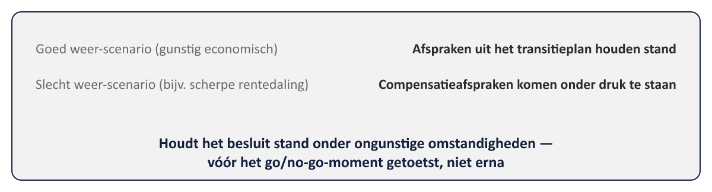

Sheet 1Titel
Project- en Programmamanagement
Niveau 3 · Deel 25: Transitie en invaren
Sheet 2De kern van de Stelselovergang
Invaren: collectieve waardeoverdracht van bestaande aanspraken
Een besluit dat, eenmaal uitgevoerd, niet is terug te draaien
Sheet 3Wat invaren inhoudt
Sociale partners stellen transitieplan op
Hoofdregel: invaren, tenzij onevenredig ongunstig voor een groep
Sheet 4Evenwichtige belangenafweging
Meridiaan beoordeelt: kan dit beheerst en integer worden uitgevoerd?
Zelfde soort afweging als macht/belang-analyse — nu met wettelijk gewicht
Sheet 5Datakwaliteit: kritieke data-elementen
| Data-element (KDE) | Kans op fouten | Impact op aanspraken | Prioriteit |
|---|---|---|---|
| Historische salarisgegevens (overgenomen, ouder administratiesysteem) | Hoog — bekend foutgevoelig | Hoog | 1 — hoogste |
| Diensttijdgegevens bij eerdere werkgevers (deels handmatig ingevoerd) | Matig | Hoog | 2 — hoog |
| Geboortedatum van deelnemers | Laag — meestal betrouwbaar | Hoog | 3 — lager ondanks hoge impact |
| Contactgegevens voor communicatie | Matig — soms verouderd | Laag — geen directe impact op aanspraken | 4 — laagste |
Niet elk datagebrek even risicovol — risicobeoordeling per KDE
Sheet 6Verder dan de standaardlijst
Fondsspecifieke risicogroepen
Historische klachten, events, incidenten meewegen
Sheet 7Onafhankelijke toetsing
Externe accountant — Agreed Upon Procedures
Rapporteert: geen blokkerende bijzonderheden
Concrete vorm van de derde verdedigingslinie (deel 18)
Sheet 8Goed weer, slecht weer

Houdt het besluit stand onder ongunstige omstandigheden?
Sheet 9Het go/no-go-moment
Vastgesteld door het bestuur (AB)
Vergelijkbaar met een Tranche Review — met één groot verschil
Sheet 10Waarom vrijwel onomkeerbaar
Aanspraken structureel herberekend en toegekend
Geen “terugzetten naar vorige versie”
| Kenmerk | Omkeerbaar besluit (bijv. IT-systeem terugzetten) | Invaren |
|---|---|---|
| Weg terug na uitvoering | Relatief eenvoudig en snel (rollback) | Vrijwel geen praktische weg terug |
| Aard van het besluit | Technische ontwerpkeuze, vooraf ingebouwd | Juridische en financiële herverdeling |
| Kosten/complexiteit van herstel achteraf | Beperkt | Enorm, kostbaar en juridisch complex — vaak zonder garantie op herstel |
Sheet 11Daarom weegt voorbereiding zo zwaar
Fouten vóór go/no-go: te corrigeren
Fouten ná uitvoering: vaak niet meer
Sheet 12Toegepast: Meridiaan
Risicobeoordeling per KDE, eigen populatie + historische klachten
Externe accountant vóór go/no-go
Bestuur rekent door: gunstig én ongunstig scenario
Sheet 13Vooruitblik
Deel 26: verdedigbaar stoppen en herprioriteren — wat als er tóch iets naar boven komt